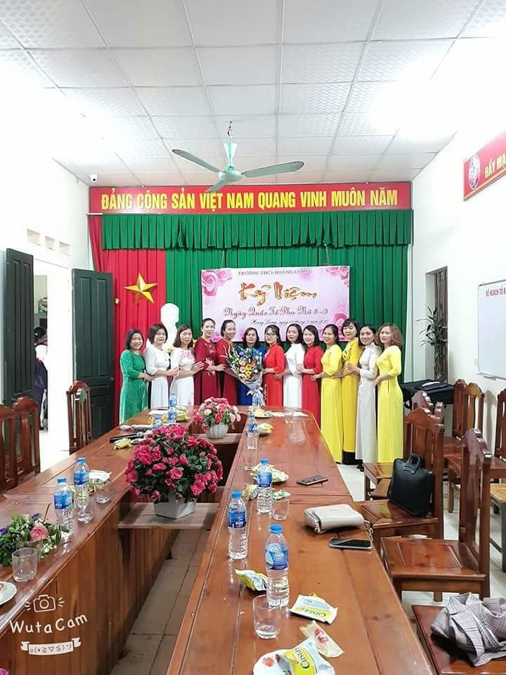
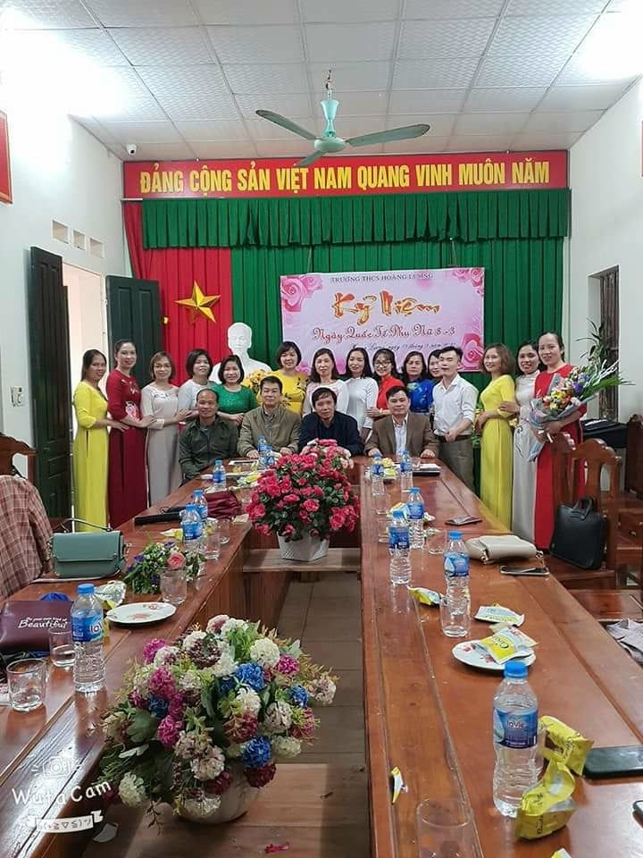
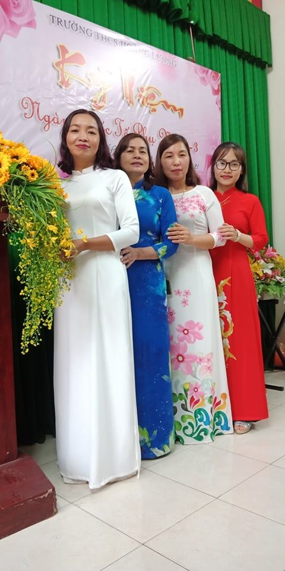
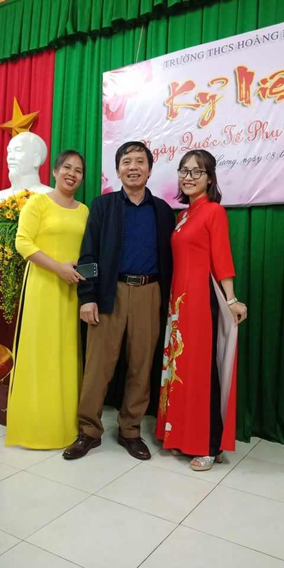

Lễ kỉ niệm ngày 8/3 năm 2021
TRUYỀN THỐNG NGÀY 8/3
Kính thưa quý vị đại biểu! Thưa toàn thể các chị em! Mỗi độ tháng 3 về, trong không khí ấm áp của mùa xuân, chị em phụ nữ nói riêng và mọi người nói chung lại háo hức đón chào kỉ niệm ngày Quốc tế phụ nữ. Đây là dịp để tôn vinh vẻ đẹp, khẳng định vai trò của những người phụ nữ trong xã hội và trong cuộc sống. Đồng thời ôn lại truyền thống lịch sử vẻ vang, biểu dương tinh thần, lực lượng của phụ nữ thế giới nói chung và phụ nữ Việt Nam nói riêng trong công cuộc đấu tranh cho độc lập dân tộc, hoà bình dân chủ, sự tiến bộ của xã hội,
Kính thưa quý vị đại biểu! Thưa toàn thể các chị em! Ngày 8/3/1910, tại Hội nghị phụ nữ do Quốc tế thứ 2 (Quốc tế Xã hội chủ nghĩa) tổ chức, 100 đại biểu phụ nữ thuộc 17 nước đòi quyền bầu cử cho phụ nữ. đã đề nghị chọn một ngày quốc tế phụ nữ để nhớ ơn những phụ nữ đã đấu tranh trên toàn thế giới. Hội nghị đã quyết định chọn ngày 8/3 làm Ngày Quốc tế Phụ nữ, Từ đó, ngày 8/3 hàng năm trở thành ngày đấu tranh chung của phụ nữ lao động trên toàn thế giới, là biểu dương ý chí đấu tranh của phụ nữ khắp nơi trên thế giới đấu tranh vì độc lập dân tộc, dân chủ, hòa bình và tiến bộ xã hội; vì quyền lợi hạnh phúc của phụ nữ và nhi đồng.
Ở nước ta, vào ngày 8/3 còn là dịp kỷ niệm cuộc khởi nghĩa Hai Bà Trưng, hai vị nữ anh hùng đầu tiên của dân tộc đã có công đánh đuổi giặc ngoại xâm, giữ nguyên bờ cõi, giang sơn đất Việt.
Thắng lợi cuộc khởi nghĩa của Hai Bà trưng được đánh giá là một bản anh hùng ca bất diệt, thể hiện ý chí độc lập và niềm tự hào dân tộc. Đồng thời, cuộc khởi nghĩa cũng là một minh chứng cho sức mạnh của phụ nữ Việt Nam trong lịch sử nhân loại trong sự nghiệp xây dựng và bảo vệ Tổ quốc.
Tại Việt Nam, để thể hiện sự tôn vinh những người phụ nữ, một nửa thế giới, người ta thường tổ chức rất trang trọng, tràn ngập hoa và những lời chúc tốt đẹp. Ngày 8/3 cũng là ngày nam giới thể hiện sự chăm sóc yêu thương cho người phụ nữ mà họ yêu quý.
Trong 365 ngày của một năm, phụ nữ có riêng một ngày để được xã hội quan tâm và bù đắp những thiệt thòi, vất vả trong cuộc sống. Họ luôn âm thầm hy sinh và chịu đựng để xây dựng hạnh phúc gia đình. Vì vậy, họ xứng đáng nhận được sự tôn trọng và quan tâm hơn nữa từ một nửa kia còn lại của thế giới, chia sẻ với họ những khó khăn trong công việc và gia đình.
Không ai có thể phủ nhận vai trò và trách nhiệm to lớn của người phụ nữ thời hiện đại: Họ vừa là người nội trợ, vừa tham gia lao động xã hội, đóng góp sức lực của mình vào sự phát triển của đất nước, không những thế họ còn giữ một thiên chức cao cả là một người mẹ, mang nặng đẻ đau ra những đứa con và nuôi dạy chúng thành người. Phụ nữ ngày nay đang dần khẳng định mình là phái đẹp chứ không còn là phái yếu như trước kia.
Kính thưa quý vị đại biểu! Thưa toàn thể các chị em! Từ thực tế lịch sử, phụ nữ Việt Nam có bản chất kiên cường, dũng cảm, cần cù lao động, sáng tạo, thông minh. Phụ nữ Việt Nam là người giữ vai trò đặc biệt quan trọng trong việc giữ gìn, phát triển bản sắc và tinh hoa văn hoá dân tộc. Họ là những người mẹ dịu hiền, đảm đang, trung hậu đã sản sinh ra những thế hệ anh hùng của dân tộc anh hùng. Trong công cuộc xây dựng đất nước, phụ nữ đã có những đóng góp quan trọng thúc đẩy sự phát triển của xã hội. Phụ nữ hiện đại không chỉ là người nội trợ trong gia đình mà còn là người lao động kiếm tiền, nhân tố quan trọng góp phần vào sự phát triển của xã hội. Là người gánh vác trách nhiệm sinh nở, cùng nuôi dạy con cái trưởng thành. Họ đang hướng tới hình ảnh thành đạt hơn, đảm đang hơn, tự tin hơn và xinh đẹp hơn. Phụ nữ càng ngày càng có nhiều đóng góp tài năng, trí tuệ, công sức lao động trong nhiều lĩnh vực xã hội và đời sống. Mặc dù vậy, đâu đó trong xã hội vẫn còn sự bất bình đẳng, sự đối xử bất công với người phụ nữ và nạn bạo hành, dùng vũ lực với nữ giới vẫn còn tiếp diễn ở một số quốc gia kém phát triển,…
Hiện nay, ở Việt Nam, phụ nữ chiếm 51% lực lượng lao động và đóng vai trò chính trong công việc gia đình và nuôi dạy con cái. Trong số các đại biểu của Quốc hội Việt Nam, tổ chức quyền lực cao nhất, phụ nữ chiếm 27,3% và được Liên Hiệp Quốc đánh giá: "Phụ nữ Việt Nam tham gia hoạt động chính trị cao nhất thế giới". Việt Nam có tỷ lệ nữ tốt nghiệp đại học là 36,24%, thạc sĩ 33,95% và tiến sĩ 25,96%.
Ngày 8/3/1965, đánh giá cao cống hiến của phụ nữ miền Nam, Đảng, chính phủ, Bác Hồ đã tặng bức trướng thêu 8 chữ vàng "Anh hùng – Bất khuất – Trung hậu – Đảm đang" và Nhà nước đã tặng Phụ nữ miền Nam Huân chương "Thành đồng" hạng nhất.
Thực hiện mục tiêu xây dựng người PN 2 giỏi: “Giỏi việc Nước, đảm việc nhà” do Tổng liên đoàn lao động Việt Nam và Công đoàn giáo dục VN phát động. Tôi tin tưởng rằng nữ CBVC trường ta sẽ tiếp tục phát huy truyền thống: Năng động- sáng tạo – trung hậu- đảm đang của PN VN trong thời kỳ đổi mới, chủ động, tự tin vượt qua mọi khó khăn thách thức, tiếp cận với công nghệ thông tin, tự học tập, tích luỹ và làm giàu tri thức cho chính bản thân mình để phục vụ tốt hơn cho sự nghiệp giáo dục và cho cuộc sống. Mong rằng các chị, các em đã, đang và sẽ là những người PN giỏi giang, là người mẹ hiền, người vợ hạnh phúc.
Kính thưa các vị đại biểu! Thưa toàn thể chị em thân mến! Con người là hoa của đất, mà người phụ nữ lại được ví là hoa của muôn loài hoa. Nhân buổi lễ kỉ niệm ngày Quốc tế phụ nữ 8/3, tôi xin trân trọng gửi tới các chị em phụ nữ lời chúc sức khoẻ, luôn tươi trẻ, hạnh phúc và thành đạt trong mọi lĩnh vực của cuộc sống và công tác. Xin trân trọng gửi tới quý vị đại biểu lời chúc sức khoẻ, hạnh phúc và thành đạt. Chúc Lễ kỷ niệm của chúng ta thành công tốt đẹp. Xin trân trọng cảm ơn!

